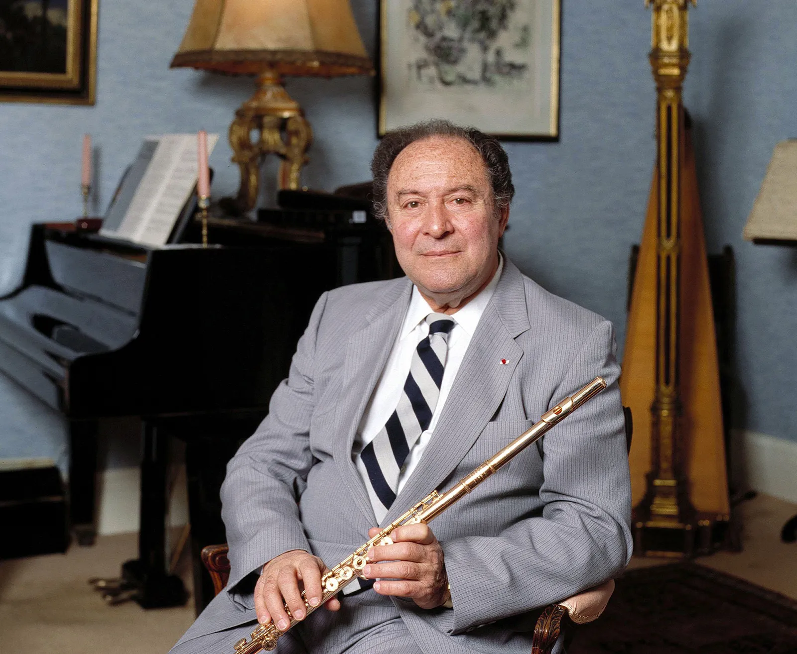
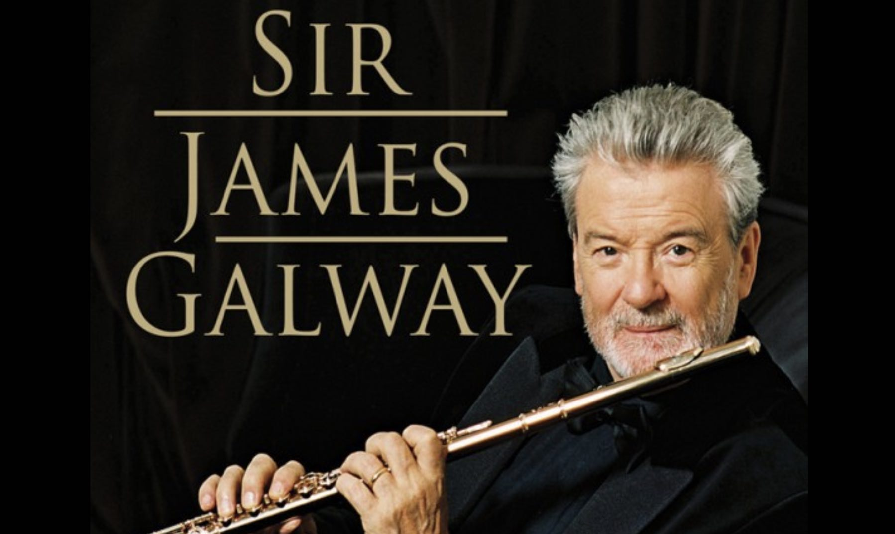
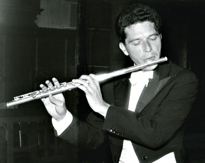
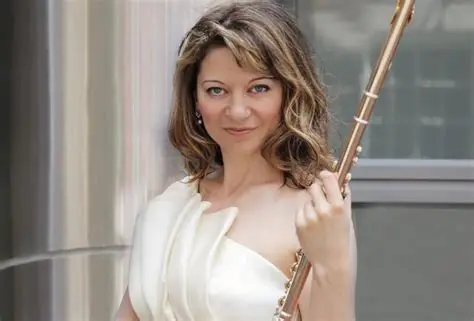

Jean-Pierre Rampal was a French flautist. He is credited with popularising the flute in the post-World War II years. He recovered many flute compositions from the Baroque era and inspired contemporary composers to create new works for the flute. His father was also a flautist and gave him early lessons. Rampal studied medicine before fleeing to Paris during the war to study at the Paris Conservatoire, graduating with first prize in just five months. He became principal flute at the Paris Opera and toured the world with harpsichordist Robert Veyron-Lacroix. He recorded over 400 albums and wrote an autobiography "Music, My Love". [citation:1][citation:3][citation:9]

James Galway is an Irish flutist from Belfast, known as "The Man with the Golden Flute". He started playing as a child and by age 10 he won all three categories in the Irish Flute Championships. He studied in London and Paris with Jean-Pierre Rampal. He played with the BBC Symphony, London Symphony, and Royal Philharmonic before becoming principal flute of the Berlin Philharmonic in 1969 under Herbert von Karajan. In 1975 he started a solo career and became an international star. His version of John Denver's "Annie's Song" was a hit in 1978. He played on the Lord of the Rings film soundtracks. He was knighted in 2001. He is known for blending classical, Irish folk, and popular music. [citation:2][citation:8]

Emmanuel Pahud is a Franco-Swiss flautist. He was born in Geneva and started playing at age four after hearing a neighbor practice Mozart. He studied at the Paris Conservatoire and won many international competitions. At age 22, he was appointed principal flute of the Berlin Philharmonic by Claudio Abbado, a position he still holds. He is known for his "prince of the flute" image and his elegant sound. He performs around 160 concerts a year, combining orchestral work with a busy solo career. He has recorded extensively for EMI Classics, from Baroque to contemporary music. He took an 18-month sabbatical in 2000 to teach in Geneva and perform worldwide. [citation:4][citation:10]

Aurele Nicolet was a Swiss flutist. He studied in Zurich and at the Paris Conservatoire with Marcel Moyse. He won the Geneva International Competition and became principal flute of the Berlin Philharmonic from 1950 to 1959. After leaving the orchestra, he taught at the Berlin Conservatory and pursued a solo career. He became one of the most influential flute teachers of the 20th century. Many famous flutists studied with him, including Emmanuel Pahud. He was known for his deep musicality and his interpretations of Bach. [citation:1][citation:4]

Mimi Stillman is an American flutist. At age 12, she was the youngest wind player ever admitted to the Curtis Institute of Music, where she studied with the legendary Julius Baker. She won the Young Concert Artists International Auditions, the youngest flutist to do so. The New York Times called her "not only a consummate and charismatic performer, but also a scholar." She has performed as soloist with The Philadelphia Orchestra and at Carnegie Hall. She founded the Dolce Suono Ensemble and has given over 70 world premieres. She also holds a Master's degree in history from the University of Pennsylvania and has written scholarly articles on music. [citation:5]
More about flute players
Other great flutists include Severino Gazzelloni (Italy), who pioneered contemporary music techniques like microtones [citation:1]; Denis Bouriakov (Crimea/USA), current principal flute of the Los Angeles Philharmonic known for transcribing violin works for flute [citation:6]; and Sharon Bezaly (Israel), called "a gift from God to the flute" by The Times, famous for her circular breathing [citation:7]. The flute has a rich tradition with players from every continent.